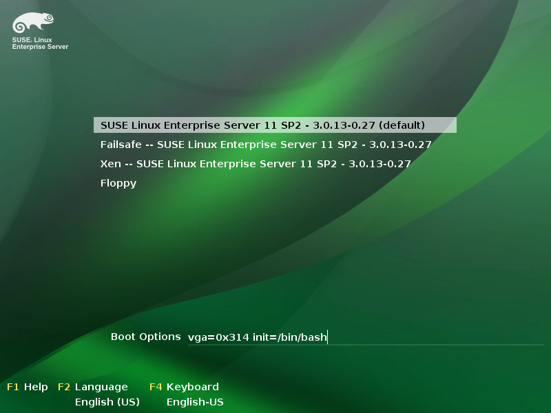

Linux系统忘记root密码的解决办法
Table of Contents
1 SUSE11
方法：在启动linux的选项里加上init=/bin/bash，通过给内核传递init=/bin/bash参数使得OS在运行login程序之前运行bash，从而进入命令行。
- 重启进入grub引导界面，选择“SUSE Linux Entrerprise…”,下边的引导选项行最后
输入init=/bin/bash,回车

- 系统进入bash，出现(none)#:提示符
#根文件系统重新mount为可读写 mount -o remount,rw / cd /usr/bin passwd root #将根文件系统置为原来的状态 mount -o remount,ro /
- 重启以新密码登录
2 Ubuntu
- 在grub菜单recovery mode选项，按e进入编辑模式
- 编辑kernel那行最后面的ro single改成rw single init=/bin/bash,按Ctrl+x
进入单用户模式,当前用户即为root
- passwd root
- ctrl+alt+delete重启
3 Ubuntu server
- 在grub菜单recovery mode选项，按e进入编辑模式
- 把ro recovery nomodeset 改成rw single init=/bin/bash，Ctrl+x进入单用
户模式